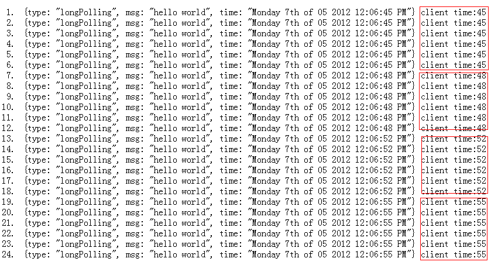
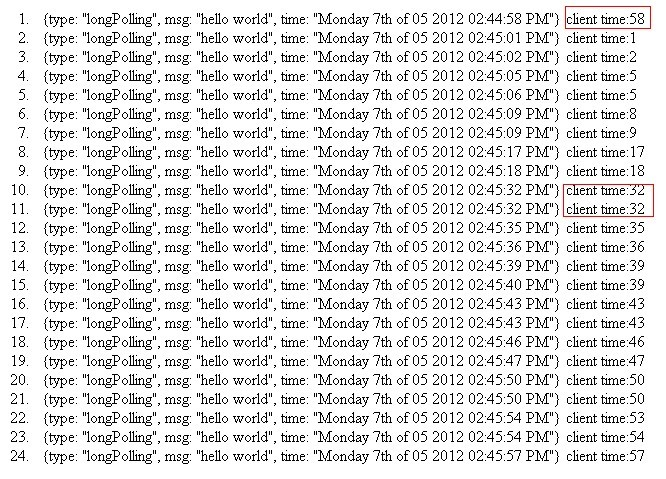
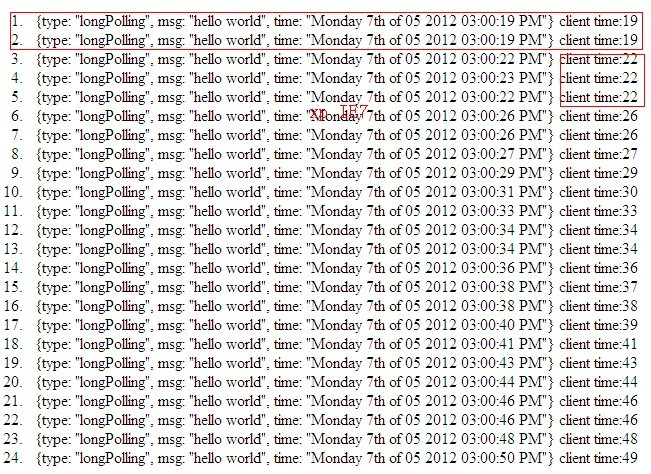
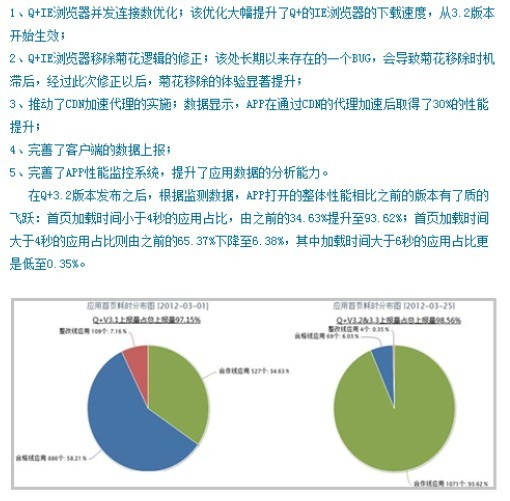

众所周知，浏览器解析和加载一个页面的资源的方式，首先是载入HTML文档，当HTML文档载入完毕的时候（通常这时就是我们前台常用的DomReady的时候，亦即DomContentLoaded），浏览器解析HTML文档，获取页面所需资源，css文件，js文件，img图片等等。在这些资源中，除了图片之外，css文件和js文件通常都是顺序获取的，而且css资源保持在js文件之前。
当然，这些资源在保持顺序加载和执行的的时候，如果浏览器提供了并发连接，那么这些顺序的资源亦可以并发同时下载，这也就是浏览器中的并发下载，顺序执行的机制。此时，并发连接数对于加载速度的影响就表现出来了，并发连接数少，意味着可以同时进行下载的资源数就越少。
PS: 这里的并发连接数，是指 同域资源下的。亦即 MaxConnectionsPerServer 或者 MaxConnectionsPerHost。
而还有一种说法叫做 MaxConnectionsPerProcess 或者 MaxConnectionsPerThread，即同一进程下的并发连接会话数。通常可以理解为一个窗口或者一个tab页即为一个新的进程（process）， 在IE 和webkit 下
MaxConnectionsPerProcess(Thread) = n * MaxConnectionsPerServer(Host) -- n为域名总数(total host)
另：Firefox(2.0~4.0)，一直都没有把进程和tab独立开来，所以在Firefox下面，MaxConnectionsPerHost和network.http.max-connections 都是固定的。比如Firefox3.5+的MaxConnectionsPerHost为6，而network.http.max-connections也固定为30。由于Q+ 和Firefox内核关系不大，暂不作为对比分析用例。
想要直观的了解并发连接数对页面资源加载造成的影响，可以看这个测试网站http://site-perf.com/
比如对QQ官网 http://www.qq.com/ 进行测试，分别选择2个并发连接数和8个并发连接数的测试结果如下：
可以直观看到，同样网络条件，2个并发数和8个并发数对于加载时间的影响，从2个的14.8s降到的5.6s
前台同时发送多个Ajax请求，后台对应的响应页面做延迟响应，看同一时间浏览器可以同时处理多少个来自同一域名（server）的连接
这里有个简单的demo http://developer.oncecode.com/comet/
例如：
我机器上装的chrome13，结果如下：

后来证明，chrome5.0+ 的最大并发连接数都是6
亦可用普通的请求或者图片等等做测试，但是需要将网速降低或者block，才有可能。
注：以下Q+内核 和 浏览器的对比，在使用IE内核的情况下，Q+的IE内核来自系统原生自带IE，而且IE7.0以上的版本都带低版本兼容模式，所以即便是系统已经升级为IE9或者更高版本，Q+中的内核表现依旧会是IE7.0的兼容模式。（下面的测试数据会有体现）
| 客户端平台 | 浏览器（内核）UserAgent | 同域最大连接数 | 进程内最大连接数 |
|---|---|---|---|
| Q+ | MSIE6.0 | 6 | 6*n (n为当前进行加载的资源域名数) |
| MS IE6.0 | MSIE6.0 | 2 | 2*n |
附图：

注：由于一次并发出去的请求每个响应的时间点不同，所以理论上看第一并发的请求数是最准确的，由于IE下第一次并发的时候，html页会占一个连接，所以把以上测试结果第一次并发数+1 即为正确的结果。
IE7,我在不同的电脑上测试过好几次，网上资料和文档上都记录和IE6.0版本的并发连接数一致，都为2，但是经过几次测试，发现不同windows补丁包下的IE7的并发连接数也不一致，有一部分是2，有一部分测试结果是3。（在默认情况下，不人为修改注册表）以下按3来记录
| 客户端平台 | 浏览器（内核）UserAgent | 同域最大连接数 | 进程内最大连接数 |
|---|---|---|---|
| Q+ | MSIE7.0 | 6 | 6*n (n为当前进行加载的资源域名数) |
| MS IE7.0 | MSIE7.0 | 3 | 3*n |
附图：

由于自IE8.0起，IE就提供了兼容模式，IE8或者以上版本可以兼容IE7.0的浏览器和文本模式。这也意味着提供兼容模式的IE必然也有多个内核机制在其内部，而Q+所取用的，正好是较低的那一版本，所以，即使系统升级IE到8.0或者9.0或者更高版本，Q+中使用的IE内核依旧为IE7.0的渲染模式。但是并发数始终按照注册表的的数值
有些文档和资料上记录IE8的默认并发连接数是6，这是在纯正IE8的系统下的数据
| 客户端平台 | 浏览器（内核）UserAgent | 同域最大连接数 | 进程内最大连接数 |
|---|---|---|---|
| Q+ | MSIE7.0 | 6 | 6*n (n为当前进行加载的资源域名数) |
| MS IE8.0 | MSIE8.0 | 6 | 6*n |
IE9貌似对并发连接数又做了调整，IE升级到IE9后，注册表中MaxConnectionsPerServer统一被增加到了10，比chrome，safari等webkit内核还要高。
| 客户端平台 | 浏览器（内核）UserAgent | 同域最大连接数 | 进程内最大连接数 |
|---|---|---|---|
| Q+ | MSIE7.0 | 10 | 10*n (n为当前进行加载的资源域名数) |
| MS IE9.0 | MSIE9.0 | 10 | 10*n |
经初步测试，sougou双核浏览器中的IE模式也是直接用的系统IE内核。并未做任何特殊的优化。
在并发连接数方面，也和普通的IE保持一致。具体数据可以参考上面Q+ vs IE 各版本的数据。
我在家里做了初步的测试，360浏览器较国内其他“双核”浏览器，还额外多出了一个选择。360浏览器有三种模式：
可以看到，即便在IE模式下，360浏览器也分为了【传统IE】和【IE9模式】，两者的区别：
360的IE9模式也不可用，这时候，可用的传统IE模式自动取自系统IE内核版本，和Q+的机制一致。不过我在一个只装有IE6的的电脑上装了360浏览器之后，发现注册表中的MaxConnectionsPerServer同样被修改到了6...
也就是说：360浏览器也是有强制修改注册表的最大并发连接数的。一旦安装之后，注册表并发连接数就会自动被修改到最小为6。
360浏览器【传统IE模式】和【IE9模式】区别：
并发连接数对于webkit内核来说，各大浏览器内核，包括Q+在内，在这一点上差别不大，以下是最近对于各个webkit内核的浏览器各个版本做的测试数据。
| 浏览器（内核） | Q+ 3.4+ | Chrome10+ | Safari10+ | 搜狗（webkit） | 360(极速模式) |
|---|---|---|---|---|---|
| 并发连接数（Per Host） | 6 | 6 | 8 | 6 | 6 |
除了safari和Opera之外，基本上其它使用chomium开源内核的平台基本都维持在默认6个并发连接。但看这一点上，基本没什么差距。后续会集中分析关于渲染性能和js计算效率的方面。
以下分别在IE和webkit内核下选取一款app在不同平台下进行加载性能的测试，清除cache之后，网络环境4M带宽。
这个网站可以直观看到DomReady，onload，第一眼看到页面的时间。
| 浏览器（内核） | 页面文档加载完毕（domready）（10次平均值） | 所有静态资源完毕（onload）（10次平均值） | |
|---|---|---|---|
| 系统装IE6.0 | MS IE | 1.8s | 12.2s |
| Q+ 3.1 | 2.1s | 14.6s | |
| Q+ 3.6 | 1.7s | 8.6 | |
| 360 | 1.7s | 8.2s | |
| sougou | 2.0s | 14.8s | |
| 系统装IE7.0 | MS IE | 1.8s | 13.0s |
| Q+ 3.1 | 2.4s | 12.6s | |
| Q+ 3.6 | 1.9s | 7.8s | |
| 360 | 1.4s | 8.0s | |
| sougou | 1.6s | 11.2s | |
| 系统装IE8.0 | MS IE | 1.6s | 8.6s |
| Q+ 3.1 | 1.8s | 10.8s | |
| Q+ 3.6 | 1.5s | 7.2s | |
| 360 | 1.4s | 7.4s | |
| sougou | 1.6s | 8.5s | |
| 系统装IE9.0+ | MS IE | 1.3s | 7.9s |
| Q+ 3.1 | 1.6s | 8.6s | |
| Q+ 3.6 | 1.4s | 7.1s | |
| 360（IE9模式） | 1.3s | 7.7s | |
| sougou | 1.4s | 8.0s | |
| 浏览器（内核） | 页面文档加载完毕（domready）（10次平均值） | 所有静态资源完毕（onload）（10次平均值） |
|---|---|---|
| Chrome 18 | 0.8s | 7.9s |
| Q+ 3.1 | 1.2s | 10.1s |
| Q+ 3.6 | 1.0s | 8.2 |
| 360（极速模式） | 0.9s | 7.4s |
| sougou（webkit） | 1.1s | 8.8s |
大家注意，以上的测试包含了Q+3.2 和 Q+3.6的版本进行的，我们知道，自从Q+3.2版本之后，客户端同事是对IE67的并发连接数进行了优化的，都强制改成了6个。同时菊花移除时机在也做了修正，所以这里把Q+3.1版本也拿来做了对比。
下面是plutoxiong在第二期微报上的总结分析： 